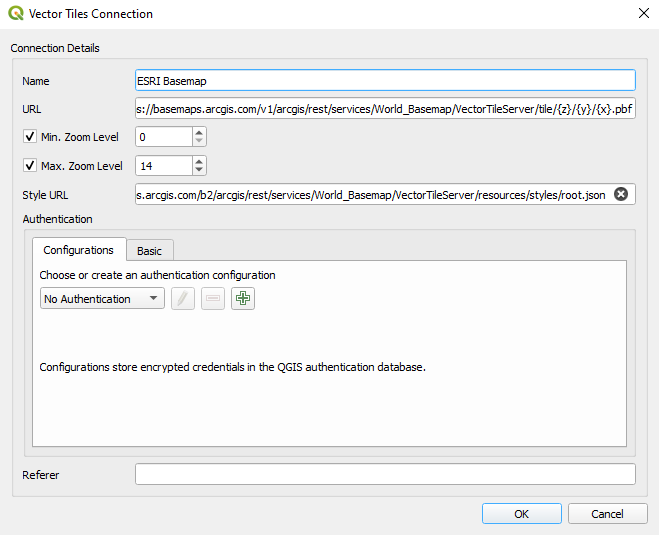

Vector tiles
Vector tiles are a better alternative for cartography maps as background data. It is lighter in size, flexible styling and your maps are not pixelated.
Online services
There are several online services. For example you can add ESRI Basemap vector tile (QGIS 3.16+):
- In QGIS, from the Browser panel right-click on Vector Tiles
- Select New Generic Connection
- A new window will appear:
- For Name type: ESRI Basemap
- For URL type: https://basemaps.arcgis.com/v1/arcgis/rest/services/World_Basemap/VectorTileServer/tile/{z}/{y}/{x}.pbf
- Set Min. Zoom Level to 0
- Set Max. Zoom Level to 14
- For Style URL type: https://basemaps.arcgis.com/b2/arcgis/rest/services/World_Basemap/VectorTileServer/resources/styles/root.json

Another source of online vector tiles are Qwant maps:
- In QGIS, from the Browser panel right-click on Vector Tiles
- Select New Generic Connection
- A new window will appear:
- For Name type: Qwant map
- For URL type: https://www.qwant.com/maps/tiles/ozbasemap/{z}/{x}/{y}.pbf
- Set Min. Zoom Level to 0
- Set Max. Zoom Level to 14
- For Style URL type: https://raw.githubusercontent.com/QwantResearch/qwant-basic-gl-style/master/style.json
Generating vector tiles for offline use
In QGIS (3.14+), you can generate your own vector tiles. Alternatively, you can generate vector tiles using OpenMapTiles from OpenStreetMap data.
In the example below, we walk through steps to generate a vector tile using OpenMapTiles for Limpopo.
Note that instructions below requires familiarity with terminal. In addition your operating system should support docker.
-
Clone the OpenMapTiles repository:
git clone git@github.com:openmaptiles/openmaptiles.git -
Download osm.pbf file for the country or region where your area falls in from here.
-
Search for your area of interest and find the OSM relation ID (from here using method described here or alternatively download it from this git repository if available).
-
Clip the osm.pbf downloaded in step 2 using the poly downloaded in step 3:
osmconvert south-africa.osm.pbf -B=limpopo.poly --complete-ways --complete-multipolygons -o=my.osm.pbf
-
Place my.osm.pbf under openmaptiles/data/
-
Run
./quickstart.sh myfrom openmaptiles/ folder (where you cloned your repository): this will generate the tiles with the default settings (i.e. low zoom level of max=7) -
Edit openmaptiles/data/my.dc-config.yml and change the Max_Zoom to 14
-
Re-run
./quickstart.sh my -
The above process should produce an mbtiles for your clipped OSM file
-
You can load the file and style it using one of the OpenMapTiles styles